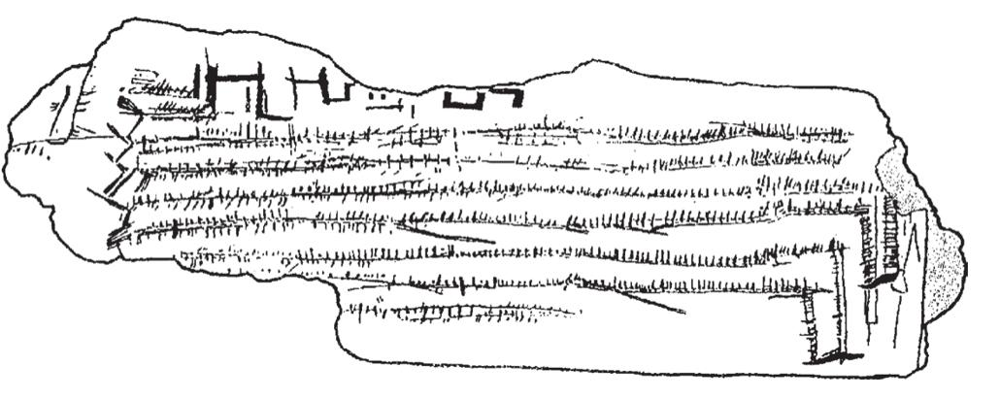

除了给数字起个名字，留下可持续的数字记录也很重要。出于经济和科学方面的原因，人类迅速发展了书写系统，它能够永久性地记下重要的事件、日期、数量或交易，简言之，任何事物都可以用数字表示。因此，书面数字符号的发明，可能与口头数字系统的发展齐头并进。
要了解数字书写系统的起源，我们必须追溯一段漫长的历史。通过奥瑞纳时期（Aurignacian Period，公元前35000年至公元前20000年）的几根骨头，我们得以看到最古老的数字书写方法：用数量完全相同的刻痕来表示一组客体4。这些骨头上有一些平行的刻痕。这可能是早期人类保留狩猎记录的方式，每捕获1只动物，就留下1个刻痕。有研究人员在一块年代略晚些的骨片上发现了具有周期性结构的刻痕，对其进行深入研究后，研究人员认为它可能作为一种阴历用于记录2次满月之间经过多少天（见图4-2）。

这个小骨片在1969年出土于法国南部一个洞穴，其年代可以追溯到旧石器时代晚期（约公元前10000年），上面刻有规则排列的标记。鉴于一些刻痕按照大约29个一组的方式分组，研究人员认为这个骨片可能是用来记录2次满月之间的天数的。
图4-2 刻有数量记号的骨片
资料来源：转载自Marshack, 1991，版权所有©1991 by Cambridge University Press，得到出版商的授权。
这种一一对应的方式作为一种最简单最基本的数字记录原则，在全世界范围内不断改进。苏美尔人在陶器中投入与所数的物品数量相同的弹珠；印加人通过在绳子上打结的方式记录数字，作为档案来保存；罗马人把前3个数字用竖线来表示。现在，仍有一些面包师使用带有刻痕的棍子来记录他们客户的欠款情况。“calculation”（计算）这个词本身源自拉丁语calculus，意为“卵石”，它将我们带回到那个通过移动算盘上的卵石来计算数字的年代。
尽管看似简单，一一对应原则仍是一项了不起的发明。它提供了持久、精确、抽象的数字表征。一串刻痕可以作为一个抽象的数字符号代表任意事物的集合，可以是牲畜、人、债务或满月周期。它还帮人类克服了感官的限制。像鸽子一样，人类不能区分49个物品和50个物品。然而，一根刻有49个刻痕的棍子可以记录下这个确切数字并将它永久保留下来。要验证计数是否正确，人们只要逐个清点物品，每清点一个就向前移动一个刻痕。这样，人类心理数轴上不能准确记忆的大数字，就可以通过一一对应的方式进行精确表达。
显而易见，一一对应也存在局限性。众所周知，一列列刻痕读写很不方便。正如我们在前面看到的，对一组3个以上的物品，人类的视觉系统无法在一瞥之下捕捉其数量。因此，37个无差别的刻痕与它们所代表的37只羊同样难以感知！人类很快学会了给刻痕分组，以及引进新的符号，从而打破了以单调的数字序列计数的模式，实际上是把大的数字分解，使其简单易读。正如我们用斜线把每5个划分成一组，把它们变成视觉上一目了然的分组。使用这种技术，数字21看起来就是，毫无疑问，这个符号比更具可读性。
然而，这种系统只是在纸上书写时方便。若使用一根棍子进行记录，要雕刻出平行的线条是非常费劲儿的。而以一定角度在木头上留下刻痕则更容易，这正是几千年前牧羊人采用的方法。他们用Ⅴ或Ⅹ这样斜划的符号来表示数字5和10。可能你已经猜到了，这正是罗马数字的由来。它们的几何形状取决于被刻在一根木棒上的容易程度。使用其他书写媒介的人则采用了不同的形状。例如，在软黏土片上书写的苏美尔人，采用能用笔写出的最简单的形状来表示数字，即圆形或圆柱形刻痕，以及著名的钉子状或“楔形”的文字。
把几个这样的符号组合在一起就可以表示更多的数字。在罗马数字中，7写作“Ⅶ（5+1+1）”。一个数的值等于其组成部分所代表的数字的总和，这种加法原则存在于许多记数法中，包括埃及人、苏美尔人和阿兹特克人的记数法在内。加法记数法既省时间也省空间，比如38这个数字，任何具体的基于一一对应的标记过程都会需要38个相同的符号，而现在只需调用7个罗马数字（38=10+10+10+5+1+1+1或ⅩⅩⅩⅧ）。不过，对于阅读和书写而言，这些数字仍然是冗长而乏味的。通过引入特殊符号，比如L（50）和D（500），可以使数字标记略简洁。如果你愿意用不同的符号表示1至9、10至90、100至900间的27个数字，则完全可以避免重复。希腊人和犹太人就采用了这样的解决方案，他们使用字母表示数字。使用这个技巧，表示345这样的复杂数字只需要3个字母（希腊文为TME，或300+40+5）。然而这种方案的使用者需要付出相当大的代价：为表示1到999的所有数字首先要记住27个符号，而记忆这些符号并不轻松。
回顾前面的内容，我们会发现，仅靠加法显然不足以表示很大的数字。乘法变得不可或缺。加法和乘法混合的符号表达起源于4 000多年以前的美索不达米亚。对于300这样的数字，马里城的居民只需简单地写下符号“3”，再在其后写下符号“百”，而不是重复3次代表100的符号，譬如罗马数字中的CCC。但是，他们仍旧在加法原则下使用个位数和十位数，因而他们的符号还不够简洁。例如，数字2 342，实际上是写作“1+1千，1+1+1百，10+10+10+10，1+1”。
后来的数字符号进一步改善了乘法原则的优势。尤其是5个世纪之前，中国人发明的一种一直沿用至今的非常规则的记数法。它只有13个任意的符号，分别代表数字1到9，数字10、100、1 000和10 000。数字2 342可以简单地根据口头表达“两千三百四十二”逐字地写成“2 1000 3 100 4 10 2”（汉语中40是“4个10”）。因此，在这个阶段，书写系统直接反映了口头记数系统。